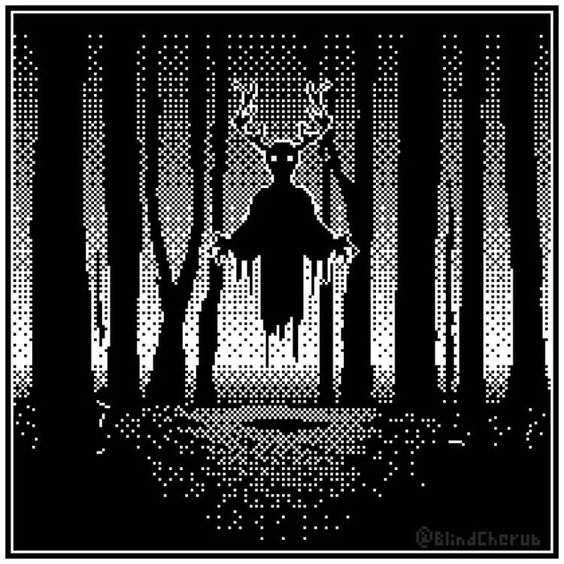

Mistérios da Mansão Esquecida

Com um pressentimento sombrio pesando em sua mente, você decide que é mais prudente voltar ao salão de baile. Enquanto verifica cada canto com atenção, procurando por qualquer sinal de perigo iminente, seus olhos captam algo que antes não havia notado: uma porta antiga, coberta de runas e símbolos misteriosos, que parecem pulsar com uma energia desconhecida. Além disso, uma escada em espiral chama sua atenção, descendo até as profundezas da mansão.